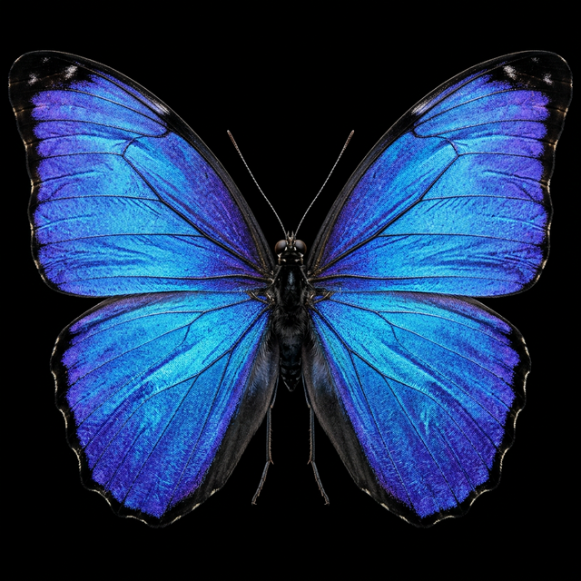

From a living butterfly to the 200 nm scale of its "Christmas Tree" lamellae — click to dive in.

The butterfly wing spans ~10 cm. The chitin lamellae are spaced 50–500 nm apart — six orders of magnitude smaller.
No pigment is used. Color arises entirely from thin-film interference in the alternating chitin/air stack — pure physics.
The angle-dependent spectral signature of nanolamellae is nearly impossible to replicate exactly — making them ideal physical unclonable functions for security tagging.